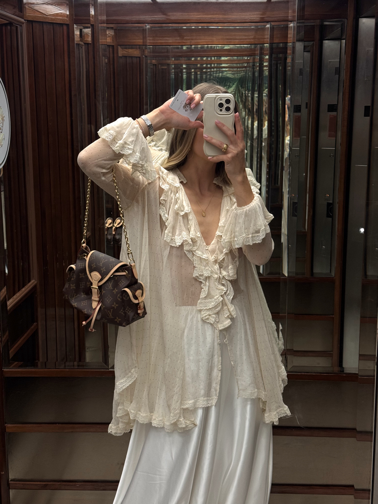
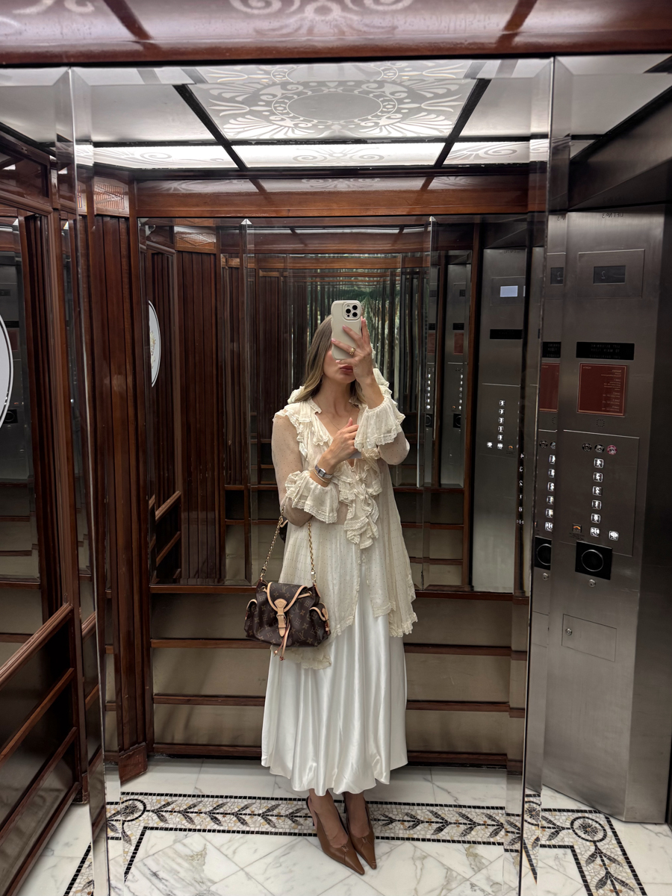
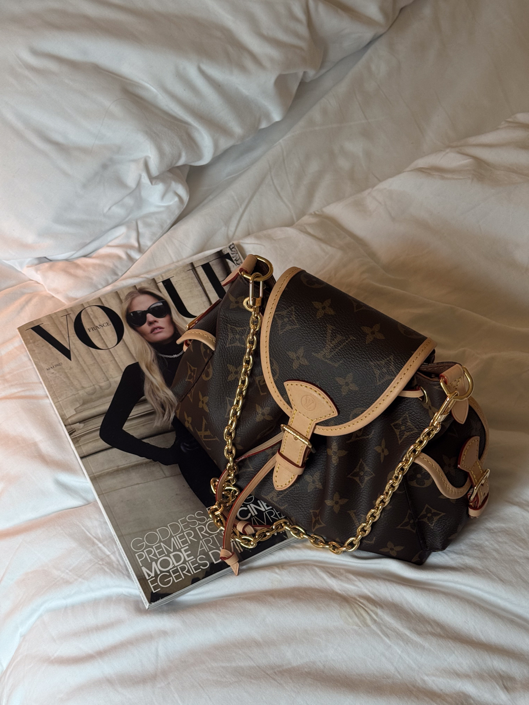

Why the Louis Vuitton Odyssée Bag Needs To Be Added To Your Bag Collection
The Louis Vuitton Odyssée bag was revealed during the Pre-Fall 2025 showings and marks a nod to the French luxury house's heritage. After wearing it for a few days — from coffee catch ups and meetings to dinner dates — I realised it truly makes an everyday bag that deserves a spot in your capsule wardrobe.
Its Adventurous Name
The name takes inspiration from Louis Vuitton's origin story as a luxury trunk maker and pays homage to the brand's heritage of travel and craftsmanship. In the spirit of travel and adventure, the Odyssée bag's form — with its drawstring features and multiple side pockets — reminds of a smaller version of a backpack. Whether your daily coffee shop outing is comparable to the adventures of the 19th century might be debatable, but a little magic never hurt anyone.
Its Signature Monogram Canvas
Originally introduced in 1896 by Georges Vuitton to help prevent counterfeiting, the Monogram pattern has reached a timeless status that elevates every look. Think your favourite pair of denim, a white t-shirt and the Odyssée bag. Chef's kiss in the capsule wardrobe kitchen.
Its Versatility
If we're speaking in girl-math terms, the Odyssée bag ticks all the boxes for a great investment. Its removable, adjustable strap and decorative chain take it from post-Pilates coffee dates to wine bar catch-ups. The magnetic front flap allows for quick access to all your essentials — phone, lip gloss, notebook and beyond. Could the Louis Vuitton Odyssée be on its way to It-bag status? I think so.


